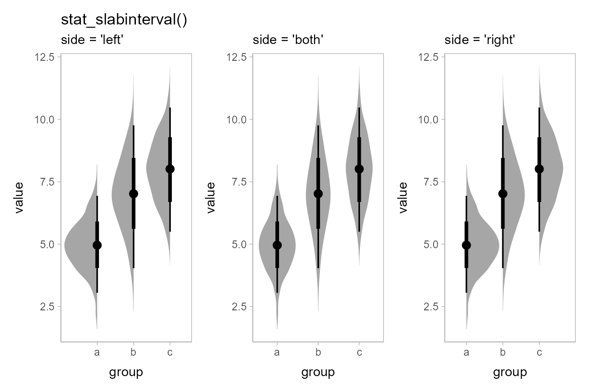
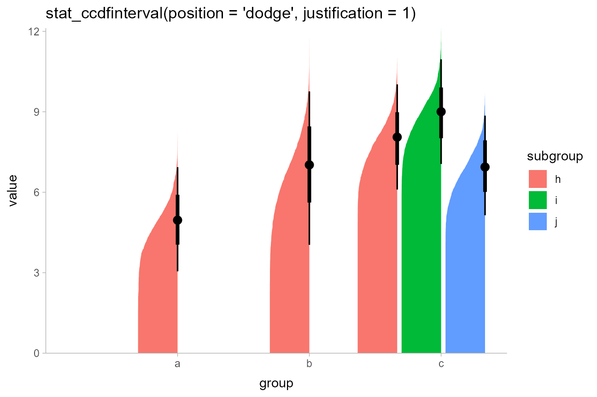
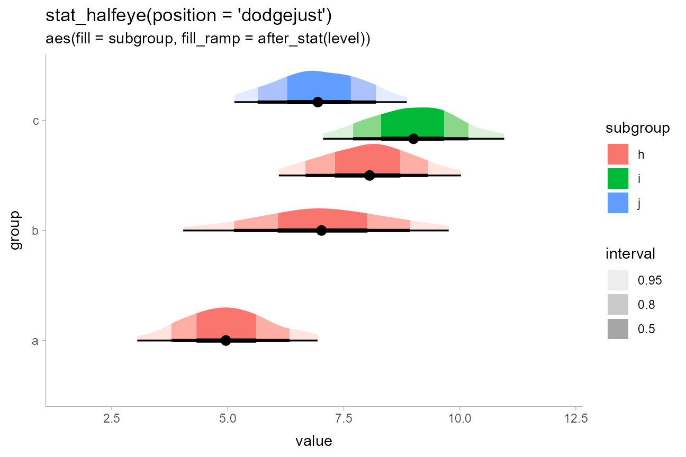
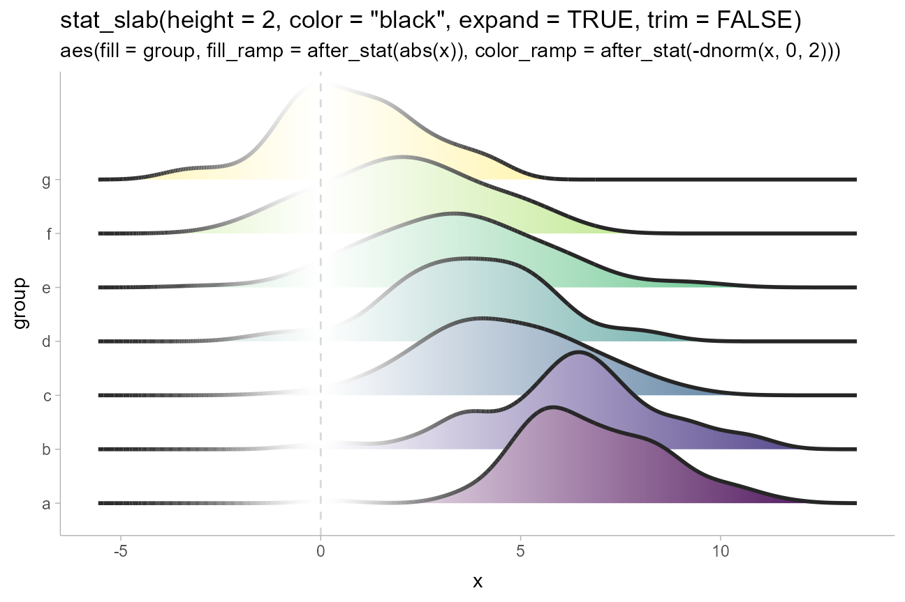
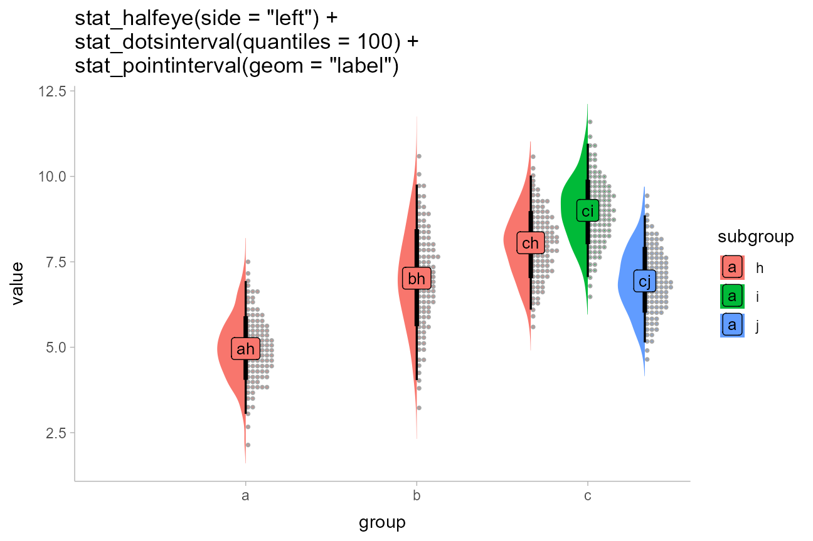

Slab + interval stats and geoms
Matthew Kay
2023-01-17
Source:vignettes/slabinterval.Rmd
slabinterval.RmdIntroduction
This vignette describes the slab+interval geoms and stats in
ggdist. This is a flexible family of stats and geoms
designed to make plotting distributions (such as priors and posteriors
in Bayesian models, or even sampling distributions from other models)
straightforward, and support a range of useful plots, including
intervals, eye plots (densities + intervals), CCDF bar plots
(complementary cumulative distribution functions + intervals), gradient
plots, and histograms.
Roadmap: It all starts with “slabinterval”

ggdist has a pantheon of geoms and stats that stem from
a common root: geom_slabinterval() and
stat_slabinterval(). These geoms consist of a “slab” (say,
a density or a CDF), one or more intervals, and a point summary. These
components may be computed in a number of different ways, and different
variants of the geom will or will not include all components.
The base geom_slabinterval() uses a variety of custom
aesthetics to create the composite geometry:

Depending on whether you want a horizontal or vertical orientation,
you can provide ymin and ymax instead of
xmin and xmax. By default, some aesthetics
(e.g., fill, color, size,
alpha) set properties of multiple sub-geometries at once.
For example, the color aesthetic by default sets both the
color of the point and the interval, but can also be overridden by
point_color or interval_color to set the color
of each sub-geometry separately.
geom_slabinterval() is most useful when paired with
stat_slabinterval(), which will automatically calculate
intervals, densities, and cumulative distribution functions, and maps
these onto endpoints of the interval sub-geometry or the
thickness of the slab sub-geometry.
Using geom_slabinterval() and
stat_slabinterval() directly is not always advisable: they
are highly configurable on their own, but this configurability requires
remembering a number of combinations of options to use. For quick
plotting, ggdist contains a number of pre-configured, easier-to-remember
shortcut stats and geoms built on top of the
slabinterval:
Shortcut geoms, starting with
geom_, are meant to be used on already-summarized data:geom_pointinterval()andgeom_interval()(for data summarized into intervals) andgeom_slab()(for data summarized into function values, like densities or cumulative distribution functions).-
Shortcut stats, starting with
stat_, which compute relevant summaries (densities, CDFs, points, and/or intervals) before forwarding the summaries to their geom. Some have geom counterparts (e.g.stat_interval()corresponds togeom_interval(), except the former applies to sample data and the latter to already-summarized data). Many of these stats do not currently have geom counterparts (e.g.stat_ccdfinterval()), as they are primarily differentiated based on what kind of statistical summary they compute. If you’ve already computed a function (such as a density or CDF), you can just usegeom_slabinterval()directly. These stats can be used on two types of data, depending on what aesthetic mappings you provide:Sample data; e.g. draws from a data distribution, bootstrap distribution, Bayesian posterior distribution (or any other distribution, really). To use the stats on sample data, map sample values onto the
xoryaesthetic.Distribution objects and analytical distributions. To use the stats on this type of data, you must use the
xdist, orydistaesthetics, which take distributional objects,posterior::rvar()objects, or distribution names (e.g."norm", which refers to the Normal distribution provided by thednorm/pnorm/qnormfunctions).
All slabinterval geoms can be plotted horizontally or vertically.
Depending on how aesthetics are mapped, they will attempt to
automatically determine the orientation; if this does not produce the
correct result, the orientation can be overridden by setting
orientation = "horizontal" or
orientation = "vertical".
We’ll start with one of the most common existing use cases for these kinds geoms: eye plots.
Eye plots and half-eye plots
On sample data
Eye plots combine densities (as violins) with intervals to give a more detailed picture of uncertainty than is available just by looking at intervals.
For these first few demos we’ll use these data:
set.seed(1234)
df = tribble(
~group, ~subgroup, ~value,
"a", "h", rnorm(1000, mean = 5),
"b", "h", rnorm(1000, mean = 7, sd = 1.5),
"c", "h", rnorm(1000, mean = 8),
"c", "i", rnorm(1000, mean = 9),
"c", "j", rnorm(1000, mean = 7)
) %>%
unnest(value)We can summarize it at the group level using an eye plot with
stat_eye() (ignoring subgroups for now):

Users of older versions of tidybayes (which used to
contain the ggdist geoms) might have used
geom_eye(), which is the older spelling of
stat_eye(). Due to the name standardization in version 2 of
tidybayes (see the description above),
stat_eye() is now the preferred spelling.
geom_eye() will continue to work for now, but is deprecated
and may throw a warning in future versions.
We can also use stat_halfeye() instead to get densities
instead of violins:
df %>%
ggplot(aes(y = group, x = value)) +
stat_halfeye() +
ggtitle("stat_halfeye()")
Or use the side parameter to more finely control where
the slab (in this case, the density) is drawn:
p = df %>%
ggplot(aes(x = group, y = value)) +
panel_border()
plot_grid(ncol = 3, align = "hv",
p + stat_eye(side = "left") + labs(title = "stat_eye()", subtitle = "side = 'left'"),
p + stat_eye(side = "both") + labs(subtitle = "side = 'both'"),
p + stat_eye(side = "right") + labs(subtitle = "side = 'right'")
)
Note how the above chart was drawn vertically instead of
horizontally: all slabinterval geoms automatically detect their
orientation based on the input data. For example, if you use a factor on
one axis (say the x axis below), the geom will be drawn
along the other axis:
df %>%
ggplot(aes(x = group, y = value)) +
stat_halfeye() +
ggtitle("stat_halfeye()")
If automatic detection of the desired axis fails, you can specify it
manually; e.g. with stat_halfeye(orientation = 'vertical')
or stat_halfeye(orientation = 'horizontal').
The side parameter works for horizontal geoms as well.
"top" and "right" are considered synonyms, as
are "bottom" and "left"; either form works
with both horizontal and vertical versions of the geoms:
p = df %>%
ggplot(aes(x = value, y = group)) +
panel_border()
plot_grid(ncol = 3, align = "hv",
# side = "left" would give the same result
p + stat_eye(side = "left") + ggtitle("stat_eye()") + labs(subtitle = "side = 'bottom'"),
p + stat_eye(side = "both") + labs(subtitle = "side = 'both'"),
# side = "right" would give the same result
p + stat_eye(side = "right") + labs(subtitle = "side = 'top'")
)
Eye plots are also designed to support dodging through the standard
mechanism of position = "dodge". Unlike with geom_violin(),
densities in groups that are not dodged (here, ‘a’ and ‘b’) have the
same area and max width as those in groups that are dodged (‘c’):
df %>%
ggplot(aes(x = group, y = value, fill = subgroup)) +
stat_eye(position = "dodge") +
ggtitle("stat_eye(position = 'dodge')")
Dodging works whether geoms are horizontal or vertical.
On analytical distributions
The same set of (half-)eye plot stats designed for sample data
described above can be used on analytical distributions or distribution
vectors by using the xdist/ydist aesthetics
instead of x/y. These stats accept
specifications for distributions in one of two ways:
Using distribution names as character vectors: this format uses aesthetics as follows:
-
xdist,ydist, ordist: the name of the distribution, following R’s naming scheme. This is a string which should have"p","q", and"d"functions defined for it: e.g., “norm” is a valid distribution name because thepnorm(),qnorm(), anddnorm()functions define the CDF, quantile function, and density function of the Normal distribution. -
argsorarg1, …arg9: arguments for the distribution. If you useargs, it should be a list column where each element is a list containing arguments for the distribution functions; alternatively, you can pass the arguments directly usingarg1, …arg9.
Using distribution vectors from the distributional
package or posterior::rvar() objects: this format
uses aesthetics as follows:
-
xdist,ydist, ordist: a distribution vector orposterior::rvar()produced by functions such asdistributional::dist_normal(),distributional::dist_beta(),posterior::rvar_rng(), etc.
For example, here are a variety of normal distributions describing the same data from the previous example:
dist_df = tribble(
~group, ~subgroup, ~mean, ~sd,
"a", "h", 5, 1,
"b", "h", 7, 1.5,
"c", "h", 8, 1,
"c", "i", 9, 1,
"c", "j", 7, 1
)We can visualize these distributions directly using
stat_eye() and the character vector input style to the
ydist, arg1, and arg2
aesthetics:
dist_df %>%
ggplot(aes(x = group, ydist = "norm", arg1 = mean, arg2 = sd, fill = subgroup)) +
stat_eye(position = "dodge") +
ggtitle("stat_eye(position = 'dodge')", 'aes(ydist = "norm", arg1 = mean, arg2 = sd)')
Or we can use the distributional::dist_normal() function
to construct a vector of normal distributions. This syntax is often more
compact and expressive than the character-vector format above:
dist_df %>%
ggplot(aes(x = group, ydist = dist_normal(mean, sd), fill = subgroup)) +
stat_eye(position = "dodge") +
ggtitle("stat_eye(position = 'dodge')", "aes(ydist = dist_normal(mean, sd))")
This makes it easy to visualize a variety of distributions. E.g., here are some Beta distributions:
data.frame(alpha = seq(5, 100, length.out = 10)) %>%
ggplot(aes(y = alpha, xdist = dist_beta(alpha, 10))) +
stat_halfeye() +
labs(
title = "stat_halfeye()",
subtitle = "aes(xdist = dist_beta(alpha, 10), y = alpha)",
x = "Beta(alpha,10) distribution"
)
If you want to plot all of these on top of each other (instead of
stacked), you could turn off plotting of the interval to make the plot
easier to read using
stat_halfeye(show_interval = FALSE, ...). A shortcut for
stat_halfeye(show_interval = FALSE, ...) is
stat_slab(). We’ll also turn off the fill color with
fill = NA to make the stacking easier to see, and use
outline color to show the value of alpha:
data.frame(alpha = seq(5, 100, length.out = 10)) %>%
ggplot(aes(xdist = dist_beta(alpha, 10), color = alpha)) +
stat_slab(fill = NA) +
coord_cartesian(expand = FALSE) +
scale_color_viridis_c() +
labs(
title = "stat_slab()",
subtitle = "aes(xdist = dist_beta(alpha, 10), color = alpha)",
x = "Beta(alpha,10) distribution",
y = NULL
)
The approach of using arg1, … arg9 can work
well when comparing similar distributions, but is harder to use with
different distribution types. For example, if we wished to compare a
Student’s t distribution and a Normal distribution, the arguments may
not line up. This is a good case to use list columns and the
args aesthetic. ggdist includes an
implementation of the scaled and shifted Student’s t distribution
(dstudent_t(), pstudent_t(), etc) as it is
often needed for visualizing frequentist confidence distributions (see
vignette("freq-uncertainty-vis")) and Bayesian priors:
tribble(
~ dist, ~ args,
"norm", list(0, 1),
"student_t", list(3, 0, 1)
) %>%
ggplot(aes(y = dist, xdist = dist, args = args)) +
stat_halfeye() +
ggtitle("stat_halfeye()", "aes(xdist = dist, args = args)")
Visualizing priors
A particularly good use of the xdist/ydist
aesthetics is to visualize priors. For example, with brms
you can specify priors using the brms::prior() function,
which creates data frames with a "prior" column indicating
the name of the prior distribution as a string. E.g., one might set some
priors on the betas and the standard deviation in a model with something
like this:
# NB these priors are made up!
priors = c(
prior(normal(0,1), class = b),
prior(lognormal(0,1), class = sigma)
)
priors## prior class coef group resp dpar nlpar bound
## 1 normal(0, 1) b
## 2 lognormal(0, 1) sigmaThe parse_dist() function can make it easier to
visualize these: it takes in string specifications like those produced
by brms — "normal(0,1)" and
"lognormal(0,1)" above — and translates them into
.dist and .args columns:
priors %>%
parse_dist(prior)## prior class coef group resp dpar nlpar bound .dist .args
## 1 normal(0, 1) b norm 0, 1
## 2 lognormal(0, 1) sigma lnorm 0, 1Notice that it also automatically translates some common distribution
names (e.g. “normal” and “lognormal”) into their equivalent R function
names ("norm" and "lnorm"). This makes it easy
to use them with the xdist/ydist aesthetics in
ggdist:
priors %>%
parse_dist(prior) %>%
ggplot(aes(y = class, xdist = .dist, args = .args)) +
stat_halfeye() +
labs(
title = "stat_halfeye()",
subtitle = "with brms::prior() and ggdist::parse_dist() to visualize priors",
x = NULL
)
Sharing thickness scaling across geometries
In some cases, such as visualizing priors and posteriors, it can be
helpful to use multiple geometries (e.g. one for prior and one for
posterior). By default, normalization/scaling of slab thicknesses is
controlled by geometries, not by a scale function. This allows various
functionality not otherwise possible, such as (1) allowing different
geometries to have different thickness scales and (2) allowing the user
to control at what level of aggregation (panels, groups, the entire
plot, etc) thickness scaling is done via the normalize
parameter to [geom_slabinterval()].
To override this default behavior and make separate geometries use a
shared thickness scale, add scale_thickness_shared() to the
plot. The difference is illustrated below:
prior_post = data.frame(
prior = dist_normal(0, 1),
posterior = dist_normal(0.1, 0.5)
)
separate_scale_plot = prior_post %>%
ggplot() +
stat_halfeye(aes(xdist = posterior)) +
stat_slab(aes(xdist = prior), fill = NA, color = "red") +
labs(
title = "prior (slab) + posterior (halfeye)",
subtitle = "default: no shared thickness scale"
)
shared_scale_plot = prior_post %>%
ggplot() +
stat_halfeye(aes(xdist = posterior)) +
stat_slab(aes(xdist = prior), fill = NA, color = "#e41a1c") +
scale_thickness_shared() +
labs(subtitle = "with scale_thickness_shared()")
separate_scale_plot + shared_scale_plot
With scale_thickness_shared() applied, both densities
have the same area under their curves.
Scale transformations of densities
The stat_slabinterval() family also adjusts densities
appropriately when scale transformations are applied. For example, here
is a log-Normal distribution plotted on a log scale:
data.frame(dist = "lnorm", logmean = log(10), logsd = 2*log(10)) %>%
ggplot(aes(xdist = dist, arg1 = logmean, arg2 = logsd)) +
stat_halfeye() +
scale_x_log10(breaks = 10^seq(-5,7, by = 2))
As expected, a log-Normal density plotted on the log scale appears
Normal. The Jacobian for the scale transformation is applied to the
density so that the correct density is shown on the log scale.
Internally, ggdist attempts to do symbolic differentiation on scale
transformation functions (and if that fails, uses numerical
differentiation) to calculate the Jacobian so that the
stat_slabinterval() family works generically across the
different scale transformations supported by ggplot.
Summing up eye plots: stat_[half]eye
All of the stats in this section follow the naming scheme
stat_[half]eye, where adding half to the name
to yields half-eyes (density plots) instead of eyes (violins).
Like the remaining shortcut stats, these stats also follow these conventions:
- Map sample values to
xoryto use the stats on sample data. - Use the
xdist,ydist, andargsaesthetics for analytical distributions or distributions contained in vector objects, such as distributional orposterior::rvar()objects.
Histogram + interval plots
In some cases you might prefer histograms to density plots.
stat_histinterval() provides an alternative to
stat_halfeye() that uses histograms instead of densities;
it is roughly equivalent to
stat_slabinterval(slab_type = "histogram"):
p = df %>%
ggplot(aes(x = group, y = value)) +
panel_border()
ph = df %>%
ggplot(aes(y = group, x = value)) +
panel_border()
plot_grid(ncol = 2, align = "hv",
p + stat_histinterval() + labs(title = "stat_histinterval()", subtitle = "horizontal"),
ph + stat_histinterval() + labs(subtitle = "vertical")
)
You can use the slab_color aesthetic to show the outline
of the bars. By default the outlines are only drawn along the tops of
the bars, as typical tasks with histograms involve area estimation, so
the outlines between bars are not strictly necessary and may be
distracting. However, if you wish to include those outlines, you can set
outline_bars = TRUE:
plot_grid(ncol = 2, align = "hv",
ph + stat_histinterval(slab_color = "gray45", outline_bars = FALSE) +
labs(title = "stat_histinterval", subtitle = "outline_bars = FALSE (default)"),
ph + stat_histinterval(slab_color = "gray45", outline_bars = TRUE) +
labs(subtitle = "outline_bars = TRUE")
)
Histograms of analytical distributions
While stat_histinterval() will not produce histograms of
continuous analytical distributions, the
stat_slabinterval() family will automatically detect
discrete distributions supplied on the xdist and
ydist aesthetics and plot them using stepped histograms
instead of densities. As with stat_histinterval(), you can
choose whether or not to draw outlines between bars of the histogram
using outline_bars = TRUE or FALSE (the
default is FALSE).
Here is an example of histograms of analytical distributions that
also shows a redundant encoding of the density by mapping the
pdf computed variable onto fill (in addition
to the default mapping onto thickness):
tibble(
group = c("a","b","c","d","e"),
lambda = c(13,7,4,3,2)
) %>%
ggplot(aes(x = group)) +
stat_slab(aes(ydist = dist_poisson(lambda), fill = after_stat(pdf))) +
geom_line(aes(y = lambda, group = NA), linewidth = 1) +
geom_point(aes(y = lambda), size = 2.5) +
labs(fill = "Pr(y)") +
ggtitle("stat_slab()", "aes(ydist = dist_poisson(lambda), fill = after_stat(pdf))")
This was inspired by an example from Isabella Ghement.
CCDF bar plots
Another (perhaps sorely underused) technique for visualizing distributions is cumulative distribution functions (CDFs) and complementary CDFs (CCDFs). These can be more effective for some decision-making tasks than densities or intervals, and require fewer assumptions to create from sample data than density plots.
For all of the examples above, both on sample data and analytical
distributions, you can replace [half]eye with
[c]cdfinterval to get a stat that creates a CDF or CCDF bar
plot.
stat_ccdfinterval() is roughly equivalent to
stat_slabinterval(slab_type = "ccdf", justification = 0.5, side = "topleft", normalize = "none", expand = TRUE)
On sample data
stat_[c]cdfinterval has the following basic
combinations:
p = df %>%
ggplot(aes(x = group, y = value)) +
panel_border()
ph = df %>%
ggplot(aes(y = group, x = value)) +
panel_border()
plot_grid(ncol = 2, align = "hv",
p + stat_ccdfinterval() + labs(title = "stat_ccdfinterval()", subtitle = "vertical"),
ph + stat_ccdfinterval() + labs(subtitle = "horizontal"),
p + stat_cdfinterval() + labs(title = "stat_cdfinterval()", subtitle = "vertical"),
ph + stat_cdfinterval() + labs(subtitle = "horizontal")
)
The CCDF interval plots are probably more useful than the CDF
interval plots in most cases, as the bars typically grow up from the
baseline. For example, replacing stat_eye() with
stat_ccdfinterval() in our previous subgroup plot produces
CCDF bar plots:
df %>%
ggplot(aes(x = group, y = value, fill = subgroup, group = subgroup)) +
stat_ccdfinterval(position = "dodge") +
ggtitle("stat_ccdfinterval(position = 'dodge')") 
The extents of the bars are determined automatically by range of the
data in the samples. However, for bar charts it is often good practice
to draw the bars from a meaningful reference point (this point is often
0). You can use ggplot2::expand_limits() to ensure the bar
is drawn down to 0:
df %>%
ggplot(aes(x = group, y = value, fill = subgroup)) +
stat_ccdfinterval(position = "dodge") +
expand_limits(y = 0) +
# plus coord_cartesian so there is no space between bars and axis
coord_cartesian(expand = FALSE) +
ggtitle("stat_ccdfinterval(position = 'dodge')")
You can also adjust the position of the slab relative to the position
of the interval using the justification parameter:
df %>%
ggplot(aes(x = group, y = value, fill = subgroup)) +
stat_ccdfinterval(position = "dodge", justification = 1) +
expand_limits(y = 0) +
coord_cartesian(expand = FALSE) +
ggtitle("stat_ccdfinterval(position = 'dodge', justification = 1)")
The side parameter also works in the same way it does
with stat_eye(). Here we’ll demonstrate it
horizontally:
p = df %>%
ggplot(aes(x = value, y = group)) +
expand_limits(x = 0) +
panel_border()
plot_grid(ncol = 3, align = "hv",
# side = "left" would give the same result
p + stat_ccdfinterval(side = "bottom") + ggtitle("stat_ccdfinterval()") + labs(subtitle = "side = 'bottom'"),
p + stat_ccdfinterval(side = "both") + labs(subtitle = "side = 'both'"),
# side = "right" would give the same result
p + stat_ccdfinterval(side = "top") + labs(subtitle = "side = 'top'")
)
On analytical distributions
You can also use stat_ccdfinterval() to visualize
analytical distributions or distribution vectors, just as you can with
stat_eye() and stat_halfeye().
By default, stat_slabinterval() uses the quantiles at
p = 0.001 and p = 0.999 of the distributions
to determine their extent (unless the lower or upper limit of the
distribution’s support is finite, in which case that value is used). You
can change this setting using the p_limits parameter, or
use expand_limits() to ensure a particular value is shown,
as before:
dist_df %>%
ggplot(aes(x = group, ydist = dist_normal(mean, sd), fill = subgroup)) +
stat_ccdfinterval(position = "dodge") +
expand_limits(y = 0) +
ggtitle(
"stat_ccdfinterval(position = 'dodge')",
"aes(x = dist_normal(mean, sd)) + expand_limits(y = 0)"
) +
coord_cartesian(expand = FALSE)
Summing up CDF bar plots
All of the stats in this section follow the naming scheme
stat_[c]cdfinterval:
- Add
cto the name to get CCDFs instead of CDFs. - Use
xdist/ydistinstead ofx/yto use the stats on analytical distributions or distribution vectors instead of sample data. - It can be helpful to use
expand_limits()to ensure meaningful reference points are included in the plot.
Gradient plots
An alternative approach to mapping density onto the
thickness aesthetic of the slab is to instead map it onto
its alpha value (i.e., opacity). This is what the
stat_gradientinterval family does (actually, it uses
slab_alpha, a variant of the alpha aesthetic,
described below).
It is roughly equivalent to
stat_slabinterval(aes(slab_alpha = after_stat(f)), thickness = 1, justification = 0.5).
On sample data
For example, replacing stat_eye() with
stat_gradientinterval() produces gradient + interval
plots:
df %>%
ggplot(aes(x = group, y = value, fill = subgroup)) +
stat_gradientinterval(position = "dodge") +
labs(title = "stat_gradientinterval(position = 'dodge')")
stat_gradientinterval() maps density onto the
slab_alpha aesthetic, which is a variant of the ggplot
alpha scale that specifically targets alpha (opacity)
values of the slab portion of geom_slabinterval(). This
aesthetic has default ranges and limits that are a little different from
the base ggplot alpha scale and which ensure that densities
of 0 are mapped onto opacities of 0. You can use
scale_slab_alpha_continuous() to adjust this scale’s
settings.
Avoiding “choppy”-looking gradients
Depending on your graphics device, gradients may be “choppy” looking.
You can fix this choppiness by setting
fill_type = "gradient", which uses a gradient feature
introduced in some graphics engines in R 4.1. If you use
stat_gradientinterval() in R 4.1, you will receive a
message suggesting you may want to explicitly set
fill_type = "gradient" to improve output quality. If you
are using R 4.2 or greater, you should not need to set
fill_type = "gradient" as support for gradients can be
auto-detected in that version, but you will get a warning message if you
use stat_gradientinterval() with a graphics engine that
does not support gradients.
df %>%
ggplot(aes(x = group, y = value, fill = subgroup)) +
stat_gradientinterval(position = "dodge", fill_type = "gradient") +
labs(title = "stat_gradientinterval(position = 'dodge', fill_type = 'gradient')")As of this writing, in R version 4.1 or greater the graphics devices
that support gradients — i.e. device that support the
grid::linearGradient() function — include
pdf(), svg(), and
png(type = "cairo"). See here
for more about the changes to the R graphics engine.
On analytical distributions
As with other plot types, you can also use
stat_gradientinterval() to visualize analytical
distributions or distribution vectors:
dist_df %>%
ggplot(aes(x = group, ydist = dist_normal(mean, sd), fill = subgroup)) +
stat_gradientinterval(position = "dodge", fill_type = "gradient") +
labs(
title = "stat_gradientinterval(position = 'dodge')",
subtitle = "aes(ydist = dist_normal(mean, sd), fill = subgroup)"
)
Dotplots
The encodings thus far are continuous probability encodings:
they map probabilities or probability densities onto aesthetics like
x/y position or alpha
transparency. An alternative is discrete or
frequency-framing uncertainty visualizations, such as
dotplots and quantile dotplots. Dotplots
represent distributions by showing each data point, and quantile
dotplots extend this idea to analytical distributions by showing
quantiles from the distribution as a number of discrete possible
outcomes.
On sample data
For example, replacing stat_halfeye() with
stat_dots() produces dotplots. With so many dots here, the
outlines mask the fill, so it makes sense to map subgroup
to the outline color of the dots as well:
df %>%
ggplot(aes(x = group, y = value, fill = subgroup, color = subgroup)) +
stat_dots(position = "dodgejust") +
labs(
title = "stat_dots()",
subtitle = "aes(fill = subgroup, color = subgroup))"
)
Unlike the base ggplot2::geom_dotplot() geom,
ggdist::geom_dots() automatically determines a bin width to
ensure that the dot stacks fit within the available space. You can set
the binwidth parameter manually to override this.
Quantile dotplots
The above plots are a bit hard to read due to the large number of dots. Particularly when summarizing posterior distributions or predictive distributions, which may have thousands of data points, it can make sense to plot a smaller number of dots (say 20, 50 or 100) that are representative of the full sample. One such approach is to plot quantiles, thereby creating quantile dotplots, which can help people make better decisions under uncertainty (Kay 2016, Fernandes 2018).
The quantiles argument to stat_dots
constructs a quantile dotplot with the specified number of quantiles.
Here is one with 50 quantiles, so each dot represents approximately a 2%
(1/50) chance. We’ll turn off outline color too
(color = NA):
df %>%
ggplot(aes(x = group, y = value, fill = subgroup)) +
stat_dots(position = "dodgejust", quantiles = 50, color = NA) +
labs(title = "stat_dots(quantiles = 50)")
For more on dotplots, see vignette("dotsinterval")
Custom plots
The slabinterval family of stats and geoms is designed
to be very flexible. Most of the shortcut geoms above can be created
simply by setting particular combinations of options and aesthetic
mappings using the basic geom_slabinterval() and
stat_slabinterval(). Some useful combinations do not have
specific shortcut geoms currently, but can be created manually with only
a bit of additional effort.
Gradients of alpha, color, and fill
Two aesthetics of particular use for creating custom geoms are
slab_alpha, which changes the alpha transparency of the
slab portion of the geom, slab_color, which changes its
outline color, and fill, which changes its fill color. All
of these aesthetics can be mapped to variables along the length of the
geom (that is, the color does not have to be constant over the entire
geom), which allows you to create gradients or to highlight meaningful
regions of the data (amongst other things). You can also employ the
ggdist-specific color_ramp and fill_ramp
aesthetics to create custom gradients with outline and fill colors, as
demonstrated later in this section.
Note: The examples of gradients in this section use
the (optional) experimental setting fill_type = "gradient".
If you do not have R greater than 4.1.0 or are not using a supported
graphics device, the output may be blank; in this case, omit this
option. Gradients can be produced without this option but they may not
look as nice.
CCDF Gradients
By default, stat_ccdfinterval() maps the output of the
evaluated function (in its case, the CCDF) onto the
thickness aesthetic of the slabinterval geom,
which determines how thick the slab is. This is the equivalent of
setting aes(thickness = after_stat(f)). However, we could
instead create a CCDF gradient plot, a sort of mashup of a CCDF barplot
and a density gradient plot, by mapping after_stat(f) onto
the slab_alpha aesthetic instead, and setting
thickness to a constant (1):
df %>%
ggplot(aes(x = group, y = value, fill = subgroup)) +
stat_ccdfinterval(aes(slab_alpha = after_stat(f)),
thickness = 1, position = "dodge", fill_type = "gradient"
) +
expand_limits(y = 0) +
# plus coord_cartesian so there is no space between bars and axis
coord_cartesian(expand = FALSE) +
ggtitle("stat_ccdfinterval(thickness = 1)", "aes(slab_alpha = after_stat(f))")
If this approach were applied to bins in a histogram, where each bin had some uncertainty associated with its height, the result would be a so-called fuzzygram (Haber and Wilkinson 1982).
Highlighting and other combinations
The ability to map arbitrary variables onto fill or outline colors
within a slab allows you to easily highlight sub-regions of a plot.
Taking the earlier example of visualizing priors, we can add a mapping
to the fill aesthetic to highlight a region of interest,
say ±1.5:
priors = tribble(
~ dist, ~ args,
"norm", list(0, 1),
"student_t", list(3, 0, 1)
)
priors %>%
ggplot(aes(y = dist, xdist = dist, args = args)) +
stat_halfeye(aes(fill = after_stat(abs(x) < 1.5))) +
ggtitle("stat_halfeye()", "aes(fill = after_stat(abs(x) < 1.5)))") +
# we'll use a nicer palette than the default for highlighting:
scale_fill_manual(values = c("gray85", "skyblue"))
We could also combine these aesthetics arbitrarily. Here is a (probably not very useful) eye plot + gradient plot combination, with the portion of the distribution above 1 highlighted:
priors %>%
ggplot(aes(y = dist, xdist = dist, args = args)) +
stat_eye(aes(slab_alpha = after_stat(f), fill = after_stat(x > 1)), fill_type = "gradient") +
ggtitle(
"stat_eye(fill_type = 'gradient')",
"aes(slab_alpha = after_stat(f), fill = after_stat(x > 1)))"
) +
# we'll use a nicer palette than the default for highlighting:
scale_fill_manual(values = c("gray75", "skyblue"))
Mashups with Correll and Gleicher-style gradients
We can also take advantage of the fact that all slabinterval stats
also supply cdf and pdf aesthetics to create
charts that make use of both the CDF and the PDF in their aesthetic
mappings. For example, we could create Correll &
Gleicher-style gradient plots by fading the tails outside of the 95%
interval in proportion to \(|1 -
2F(x)|\) (where \(F(x)\) is the
CDF):
priors %>%
ggplot(aes(y = dist, xdist = dist, args = args)) +
stat_gradientinterval(aes(slab_alpha = after_stat(-pmax(abs(1 - 2*cdf), .95))),
fill_type = "gradient"
) +
scale_slab_alpha_continuous(guide = "none") +
ggtitle(
"stat_gradientinterval(fill_type = 'gradient')",
"aes(slab_alpha = after_stat(-pmax(abs(1 - 2*cdf), .95)))"
)
We could also do a mashup of faded-tail gradients with violin plots
by starting with an eye plot and then using the generated
cdf aesthetic to fade the tails, producing plots like those
in Helske et
al.:
priors %>%
ggplot(aes(y = dist, xdist = dist, args = args)) +
stat_eye(aes(slab_alpha = after_stat(-pmax(abs(1 - 2*cdf), .95))), fill_type = "gradient") +
scale_slab_alpha_continuous(guide = "none") +
ggtitle(
"stat_eye(fill_type = 'gradient')",
"aes(slab_alpha = after_stat(-pmax(abs(1 - 2*cdf), .95)))"
)
A related idea is one from Tukey: rather than visually emphasizing where a value is likely, emphasize where it is unlikely. While Tukey used a visual representation showing both pointwise and simultaneous intervals, for this example we will do something a bit different, inverting the faded-tails function from Correll & Gleicher to create bars that “block out” the regions of low likelihood:
dist_df %>%
ggplot(aes(x = group, ydist = dist_normal(mean, sd), fill = subgroup)) +
stat_slab(
aes(
thickness = after_stat(pmax(0, abs(1 - 2*cdf) - .95)),
fill_ramp = after_stat(pmax(0, abs(1 - 2*cdf) - .95))
),
side = "both", position = "dodge", fill_type = "gradient"
) +
labs(
title = 'stat_slab(side = "both")',
subtitle = paste0(
"aes(fill = subgroup,\n ",
"fill_ramp and thickness = after_stat(pmax(0, abs(1 - 2*cdf) - .95)))"
)
) +
guides(fill_ramp = "none") +
coord_cartesian(expand = FALSE)Thanks to a tweet from Jessica Hullman that inspired the idea.
Densities filled according to intervals
Another common chart type involves filling in the interior of a halfeye plot according to some intervals. Here, we can use the fact that computed variables from the interval sub-geometry are made available to the slab sub-geometry and vice versa.
For example, within the slab sub-geometry, the .width
and level computed variables correspond to the smallest
intervals that contain the x value at that portion of the
slab. Thus, we can map .width or level onto
the slab fill:
df %>%
ggplot(aes(y = group, x = value)) +
stat_halfeye(aes(fill = after_stat(level))) +
# na.translate = FALSE drops the unnecessary NA from the legend, which covers
# slab values outside the intervals. An alternative would be to use
# na.value = ... to set the color for values outside the intervals.
scale_fill_brewer(na.translate = FALSE) +
labs(
title = "stat_halfeye()",
subtitle = "aes(fill = after_stat(level))",
fill = "interval"
)
(Note: in previous versions of ggdist, using
cut_cdf_qi() was the recommended way to achieve this
affect. That function still exists for backwards compatibility, but
mapping level or .width is now the recommended
approach, as it generalizes to other interval types, such as
highest-density intervals — see later.)
To apply the color scale to all values outside the intervals, one
option is to split stat_halfeye() into its constituent
parts (stat_slab() and stat_pointinterval()),
then include a “100%” interval in .width:
df %>%
ggplot(aes(y = group, x = value)) +
stat_slab(aes(fill = after_stat(level)), .width = c(.66, .95, 1)) +
stat_pointinterval() +
scale_fill_brewer() +
labs(
title = "stat_slab()",
subtitle = "aes(fill = after_stat(level), .width = c(.66, .95, 1))",
fill = "interval"
)
If we change the interval type used, the resulting
.width and level computed variables change
correspondingly, allowing us to highlight other types of intervals
besides quantile intervals; for example, highest-density intervals:
qi_plot = data.frame(dist = dist_beta(10, 2)) %>%
ggplot(aes(xdist = dist, fill = after_stat(level))) +
stat_halfeye(point_interval = median_qi, .width = c(.5, .8, .95)) +
scale_fill_brewer(na.value = "gray95") +
labs(subtitle = "stat_halfeye(aes(fill = after_stat(level)), point_interval = median_qi)")
hdi_plot = data.frame(dist = dist_beta(10, 2)) %>%
ggplot(aes(xdist = dist, fill = after_stat(level))) +
stat_halfeye(point_interval = mode_hdci, .width = c(.5, .8, .95)) +
scale_fill_brewer(na.value = "gray95") +
labs(subtitle = "stat_halfeye(aes(fill = after_stat(level)), point_interval = mode_hdci)")
qi_plot /
hdi_plot
Using color ramps for fill and color
aesthetics
ggdist supplies color_ramp (or
colour_ramp) and fill_ramp aesthetics which
can be used to vary (“ramp”) the outline or fill colors smoothly from a
base color (default "white") to whatever color the geometry
would otherwise have.
Taking the above example with interval-filled slabs, we could use the
fill_ramp aesthetic instead of the fill
aesthetic to set the slab color based on the interval it is in. We could
then vary the base fill color separately from the interval based on
another column in the original data table, such as the
subgroup column:
df %>%
ggplot(aes(y = group, x = value)) +
stat_halfeye(
aes(fill = subgroup, fill_ramp = after_stat(level)),
.width = c(.50, .80, .95),
# NOTE: we use position = "dodgejust" (a dodge that respects the
# justification of intervals relative to slabs) instead of
# position = "dodge" here because it ensures the topmost slab does
# not extend beyond the plot limits
position = "dodgejust",
) +
# a range from 1 down to 0.2 ensures the fill goes dark to light inside-out
# and doesn't get all the way down to white (0) on the lightest color
scale_fill_ramp_discrete(na.translate = FALSE) +
labs(
title = "stat_halfeye(position = 'dodgejust')",
subtitle = "aes(fill = subgroup, fill_ramp = after_stat(level))",
fill_ramp = "interval"
)
We could similarly use stat_interval() with the
color_ramp aesthetic to vary subgroup color separately from
the whiteness of the intervals. Here, level is a variable
generated by all stats in the stat_slabinterval() family
which contains the level of the generated intervals, as an ordered
factor.
dist_df %>%
ggplot(aes(x = group, ydist = dist_normal(mean, sd), color = subgroup)) +
stat_interval(aes(color_ramp = after_stat(level)), position = "dodge") +
labs(
title = "stat_interval()",
subtitle = "aes(color = subgroup, color_ramp = after_stat(level))"
)
See help("scale_color_ramp") for more information on the
color ramp aesthetics/scales.
Raindrop plots
Barrowman and
Myers proposed an alternative to density-based eye plots (such as
created by stat_eye() by default) called raindrop
plots. In these, the thickness of the slab is proportional to
log(pdf) instead of pdf, and is bounded within
the 95% interval. We can construct a function that uses the
pdf and .width computed variables to give a
thickness proportional to log(pdf) within the 95% interval,
and use it to create raindrop plots.
Barrowman and Myers apply this technique with a 95% raindrop superimposed on a 99% raindrop, which we can replicate:
priors %>%
ggplot(aes(y = dist, xdist = dist, args = args)) +
# must also use normalize = "groups" because min(log(pdf)) will be different for each dist
stat_slab(
aes(thickness = after_stat(ifelse(.width <= 0.99, log(pdf), NA))),
normalize = "groups", fill = "gray85", .width = .99, side = "both"
) +
stat_eye(
aes(thickness = after_stat(ifelse(.width <= 0.95, log(pdf), NA))),
normalize = "groups"
) +
ggtitle(
'stat_eye(normalize = "groups")',
"with aes(thickness = after_stat(ifelse(.width <= 0.95, log(pdf), NA)))\nand aes(thickness = after_stat(ifelse(.width <= 0.99, log(pdf), NA)))"
)
Creating ridge plots
When plotting densities (as in stat_halfeye(),
stat_slab(), etc) it can be useful to overplot many
densities simultaneously, an approach sometimes called ridge
plots (e.g. as in the ggridges package). This can be
done by setting scale or height to a value
greater than 1. Setting height is often the best approach
as it will correctly adjust plot boundaries (unless you need to use
position = "dodge", in which case you should use
scale and adjust plot boundaries manually).
set.seed(1234)
ridges_df = data.frame(
group = letters[7:1],
x = rnorm(700, mean = 1:7, sd = 2)
)
ridges_df %>%
ggplot(aes(y = group, x = x)) +
stat_slab(height = 2, color = "black") +
ggtitle("stat_slab(height = 2, color = 'black')")Depending on if it makes sense for your data (for example, if the
scale is unbounded), you may also wish to adjust the trim
parameter, which by default restricts the density estimator to 0 outside
of the range of the data. Setting trim to
FALSE will ensure the densities smoothly go down to 0.
Combining this with expand = TRUE will make each slab
expand itself to the limits of the x axis.
We’ll use trim and expand along with a
combination of fill and fill_ramp to give each
group on the y axis a different color and to vary the fill along the
x axis in a way that provides a “softer” form of region of
practical equivalence:
ridges_df %>%
ggplot(aes(
y = group, x = x,
fill = group, fill_ramp = after_stat(abs(x)),
color_ramp = after_stat(-dnorm(x, 0, 2))
)) +
stat_slab(
height = 2, color = "gray15",
expand = TRUE, trim = FALSE,
fill_type = "gradient",
show.legend = FALSE
) +
geom_vline(xintercept = 0, color = "gray85", linetype = "dashed") +
ggtitle(
'stat_slab(height = 2, color = "black", expand = TRUE, trim = FALSE)',
'aes(fill = group, fill_ramp = after_stat(abs(x)), color_ramp = after_stat(-dnorm(x, 0, 2)))'
) +
scale_fill_viridis_d()
We use a tighter ramp on color compared to
fill (via -dnorm() instead of
abs()) because we want the outlines to quickly ramp back to
black outside of 0 so that they have sufficient contrast against the
slabs when they overlap.
Varying side, scale, and justification within geoms
The side, scale, and
justification parameters can also be varied within all
geoms in the geom_slabinterval() family, allowing (for
example) different groups to hang above or below the interval:
dist_df %>%
filter(subgroup == "h") %>%
mutate(side = c("top", "both", "bottom")) %>%
ggplot(aes(y = group, xdist = dist_normal(mean, sd), side = side)) +
stat_dotsinterval(scale = 2/3) +
labs(
title = 'stat_dotsinterval(scale = 2/3)',
subtitle = 'aes(xdist = dist_normal(mean, sd), side = c("top","both","bottom"))'
) +
coord_cartesian()
Multiple slabs and intervals in composite plots
Sometimes you may want to include multiple different types of slabs in the same plot in order to take advantage of the features each slab type provides. For example, people often combine densities with dotplots to show the underlying datapoints that go into a density estimate, creating so-called “rain cloud” plots.
To use multiple slab geometries together, you can use the
side parameter to change which side of the interval a slab
is drawn on and set the scale parameter to something around
0.5 (by default it is 0.9) so that the two
slabs do not overlap. Geoms can also be dodged together, as in this
example using densities with quantile dotplots in subgroups. This
example also shows how stat_pointinterval() can be
repurposed to be used with other geoms; here to replace points with
labels (the idea of replacing points with labels comes from Brenton
Wiernik).
df %>%
ggplot(aes(x = group, y = value, fill = subgroup)) +
stat_slab(side = "left", scale = 0.5, position = "dodge") +
stat_dotsinterval(scale = 0.5, quantiles = 100, position = "dodge") +
stat_pointinterval(
geom = "label",
aes(label = paste0(group, subgroup)),
.width = .5, # set to a scalar to draw only one label instead of two
position = position_dodge(width = 1),
size = 3.5
) +
labs(title = paste0(
'stat_halfeye(side = "left") +\n',
'stat_dotsinterval(quantiles = 100) +\n',
'stat_pointinterval(geom = "label")'
))
When constructing composite plots it may be useful to position the
slab and interval parts of the geometry separately. While some relative
positioning of these geometries is supported by manipulating the
justification parameter, if you want complete, separate
control over positioning of intervals versus slabs, the simplest
approach can be to specify those geometries separately.
For example, the following uses a separate specification of a
stat_slab() and a stat_pointinterval() instead
of a combined stat_slabinterval() in order to use
position_dodge() on the intervals but not the slabs:
df %>%
ggplot(aes(fill = group, color = group, x = value)) +
stat_slab(alpha = .3) +
stat_pointinterval(position = position_dodge(width = .4, preserve = "single")) +
labs(
title = "stat_slab() and stat_pointinterval()",
subtitle = "with position_dodge() applied to the intervals",
y = NULL
) +
scale_y_continuous(breaks = NULL)
(Thanks to Brenton Wiernik for this example.)